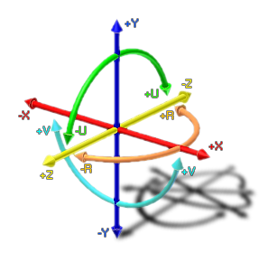

joystick_upos
Returns the position of the u-axis of joystick.
Syntax :
joystick_upos(id);
| Argument | Description |
|---|---|
| id | The id of the joystick (1 or 2). |
Returns : Real
Description
This function will return the position of the u-axis of the joystick/gamepad with the given id, with the value being somewhere between -1 and 1. See the image below for the relationship between the different axes
of rotation that are accepted. The id can be either 1 or 2 as GameMaker:Studio only accepts input from a maximum of two joysticks/gamepads.
NOTE : This function is only available for Windows.

Example :
uu += spd * joystick_upos(1);
The above code uses the returned value of the joystick_ypos function to set a variable within the instance.
Back : Joystick Input
Next : joystick_vpos